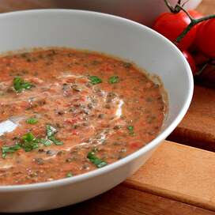

Dal Makhani Recipes

Description
Dal Makhani is one of the most popular lentil recipes from the North
Indian Punjabi cuisine made with Whole Black Lentils (known as Urad dal or
Kaali Dal in Hindi) and Kidney Beans (known as Rajma in Hindi).
Ingredients
- 1 pound ground beef
- 2 teaspoons minced garlic
- 1 (26 ounce) jar spaghetti sauce
- ½ cup water
- cottage cheese
- egg
- black pepper
Directions
- Step1
-
Crumble beef and garlic into a 2-quart microwave-safe bowl. Heat in
microwave on high until beef is no longer pink, about 6 minutes. Stir
and drain beef. Add spaghetti sauce and water.
- Step2
- Combine cottage cheese, eggs, and black pepper in another bowl.
- Step3
-
Spread about 1/2 cup meat mixture in the bottom of a 9x13-inch baking
dish. Arrange half the lasagna noodles over sauce and spread with
cottage cheese mixture. Top cottage cheese mixture with half the
spinach, half the meat sauce, and half the mozzarella cheese; repeat
each layer.
- Step4
-
Cover baking dish with heavy-duty plastic wrap and heat in microwave on
high for 8 minutes. Continue to heat in microwave on medium until
noodles are tender and cheese is melted, 30 to 32 minutes, turning dish
occasionally. Sprinkle with Parmesan cheese and allow lasagna to rest
for 15 minutes before slicing and serving.
Home